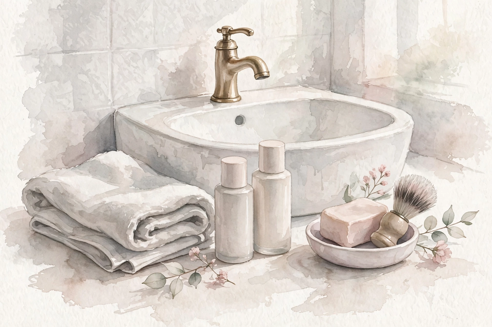
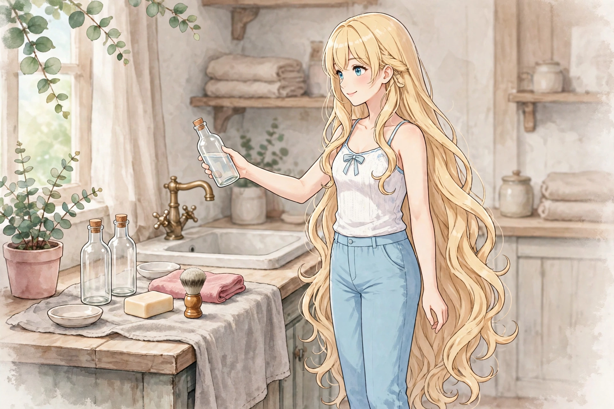

トップ ＞ スキンケア ＞ 家族で使う／男性のスキンケアの基本手順
家族で使う／男性のスキンケアの基本手順

「夫や息子にも使わせたいけれど、何から始めたらいいか」。施術のお客様から、家族のスキンケアについて相談を受けることがあります。この記事では、基本手順の組み立てと、家族でアイテムを共有するときの確認点を整理します。
基本手順は、性別で大きくは変わらない
スキンケアの基本の流れは、洗う（洗顔）、水分を与える（化粧水）、覆う（乳液やクリーム）の3つです。この骨格は性別で大きく変わりません。男性向けと表示された商品も、この役割の分け方で読むことができます。まずは役割がそろっているかを確認するのが、選び方の出発点です。
手順を増やすより、3つを毎日続けられる形にすることが大切です。置き場所を洗面所の手の届く範囲にまとめる、朝は2つまでに絞るなど、生活に合わせた調整は家族それぞれで構いません。
共有するときは、容器と減り方を見る
家族で1本を共有する場合は、容器の形が使い勝手を左右します。ポンプ式は量が一定になりやすく、誰が使っても同じ量を出しやすい形です。ジャータイプを共有する場合は、手で直接取る形になるので、清潔な手で使う、スパチュラを使うといった衛生面の配慮が要ります。
減り方も共有の場合は読みにくくなります。誰がどれくらい使っているか分からないと、買い替えのタイミングを逃しがちです。なくなる前に気づけるよう、残量が見える容器を選ぶか、買い置きを1本用意しておくと安心です。
ひげそりの後は、手順のタイミングを合わせる
ひげそりをする方は、その後のタイミングで化粧水などの手順を進めると、流れが作りやすくなります。朝の身支度の中で「洗顔→ひげそり→化粧水→乳液」と順番を固定しておくと、忘れにくくなります。使うアイテムの表示に、ひげそりの後についての案内がある場合は、それに従ってください。
家族のケアは、まず基本の3役割と、続けられる手順から。それがそろえば、あとは各自の好みで調整していけます。
家族に勧めるときの進め方も大切です。いきなり3点をそろえて渡すより、まず洗顔と化粧水の2点から始めてもらい、続けられそうなら乳液を足す、という段階を踏む方が定着しやすくなります。香りや質感の好みは個人差が大きいので、可能なら一緒に売り場で試す、本人の感想を聞く、といった過程も有効です。施術の現場でも、ケアは「勧める側の正しさ」より「使う側の続けやすさ」で決まると感じています。家族の分は、無理に自分のアイテムと統一せず、本人の生活リズムに合う形を尊重することが、長続きの秘訣です。

セラフィナ「基本は男女共通の3役割。共有するならポンプ式が管理しやすいね」